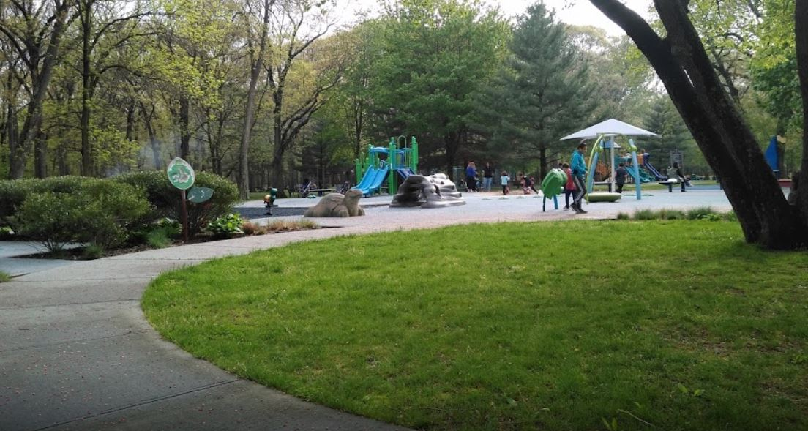
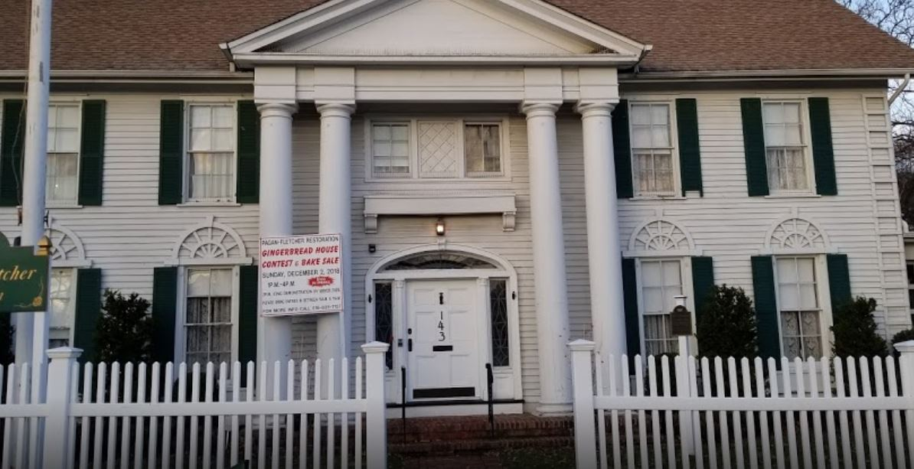

Parks and Public
Areas in Valley Stream
Valley Stream State Park
Valley Stream State Park is located in the village of Valley Stream in Nassau County, New York. The park is one of three state parks located in the Town of Hempstead on Long Island. This park opened in 1928 together with Southern State Parkway, Hempstead Lake State Park, Belmont Lake State Park, and Heckscher State Park. Initially the park included Cornell's Pond, which had a freshwater beach that charged an admission fee of 10 cents. Crowded and unsanitary conditions led local residents to lobby for its closing. In 1958, the state to transferred the park's southern portion with this pond to the Village of Valley Stream. It reopened as the village-operated Arthur J. Hendrickson Park. Valley Stream State Park is a day-use facility, convenient to the Southern State Parkway. The park offers a nature trail, cross-country skiing, a playground and playing fields, horseshoe, volleyball, basketball, and bocce ball courts, picnic tables and pavilions, fireplaces and grills, and recreation programs. Pets are not permitted.
Valley Stream Recreation Department
The park is wonderful. It is nicely kept and there are some nice facilities such as a plaground, a pool, and some nice walking paths. There is a gazebo and a an attractive fountain. Once a year the local fire department sets up a traveling carnival as a fundraiser. It is well attended by many community members. Facility is superb. Accessing the parking if your not from the area can be tricky depending on the time of day.
Valley Stream Historical Society
Great place to visit and learn about Valley Stream history. The current president of the society gives the tour.
